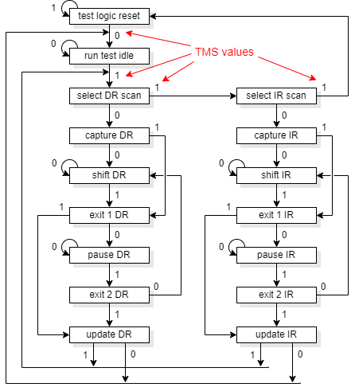

Not every chip manufactured will work. Production tests should sort out which do.
BIG problem. Difficult! Can be automated.
Problem: need to apply vectors to logic deep inside sequential machines: may need long sequences.
Contrived example: test the outputs (only) of a seven-segment decoder.
In isolation: three patterns suffice to cover all on/off states.
Connected after a counter: (at least) five cycles are needed.
The problem worsens as units are more deeply buried.
Usually important to: Design for Test (DfT)
The simplest tests are for ‘stuck at’ faults – i.e. a network or node is always one digital value. These can be detected by providing patterns where the node is intended to be in each of its states and there is an observable difference if it is wrong.
It is quite difficult to find such patterns by hand. Computers are quite good at searching large data sets with simple algorithms. Therefore ATPG is a convenient way to produce a test set which gives comprehensive coverage (for faults which follow this model).
These patterns must be applied to the block on every chip manufactured to see if it is functional. This requires an expensive machine, so time-on-tester should be minimised, i.e. use the fewest patterns commensurate with complete testing. Again, software is good at solving these problems (and there is no great time constraint for doing so). Considerable effort has been put into minimising the test sets for ICs.
Unfortunately, with modern ICs the power constraints may be such that it is infeasible to operate all the blocks simultaneously. A test strategy which tries to maximise the number of transitions in a short time can dissipate too much power and … blow up the chip! Really! Clearly there are extra constraints when generating the test set.
The description above refers to logic ‘blocks’. When a complex SoC is operating, the blocks are not independent so it is typically not possible to apply a desired pattern directly. What is desired is controllability, where block inputs can be set, even if deeply embedded in the logic.
Similarly, the outputs need to be checked for (in)correctness and this is impeded if there is more logic between the block under test and the user. What is desired is observability.
It is convenient if a chip can test itself; that way all that the tester needs to do is power on, clock for a while and check that a ‘pass’ code is generated. (Failure to produce this code at the correct time indicates a failure.)
‘Traditionally’ ASIC BIST has involved the generation of test patterns using a ROM or (for a small area overhead) a pseudo-random number generator. The output signature can be collected as (for example) an output CRC, again at reasonable cost. With a long enough test sequence and CRC the chance of a false positive will be small.
Nowadays it is likely that a SoC will have one or more processors on board which can be exploited for test purposes. Self-test software can be built into a boot ROM – or downloaded into RAM via a test port and executed there – which can exercise the chip's functions and provide fault indications.
Using an existing processor has several advantages. The hardware overhead (and complexity) will be reduced slightly, but a big advantage is that a ROM's size will be known early but its contents can be fixed late in the design process, allowing extra time for test development. As the programming of a ROM is probably done with a single metal layer it is even relatively cheap to change later, as only a few (expensive!) masks would need to be replaced. If downloading test software from a tester it is possible to develop and upgrade tests after the chips are in fabrication, although download times may increase the cost of testing each chip.
A means of achieving controllability and observability of ‘buried’ logic blocks.
A pipeline is shown here for convenience: this applies to any sequential structure.
A scan path makes some or all of the flip-flops in a circuit directly controllable and directly observable. It works this way:
The flip-flops to be scanned are placed in the normal way but, late in the process replaced with scan flip-flops. Scan flip-flops have a second mode of operation, controlled by a global input, which diverts their input from another scan flip-flop. This makes a (long) shift register with a two additional connections, scanin and a scan-out.
The ordering of the flip-flops in the scan chain may be arbitrary. It need not be as ‘neat’ as shown above: it can be determined after placement to minimise the wiring overhead by connecting physically adjacent flip-flops. It is, of course, required that the connection order is known.
To test a circuit:
Clearly a subsequent pattern can be scanned in at the same time as the current one is extracted. Although this process takes a (large) number of clocks for each pattern, the patterns can be applied to the combinatorial logic directly and all the blocks can be tested in parallel. For non-trivial sequential circuits the process is almost always a significant time-saver.
There is, of course, an area and a (small) performance cost to substituting the flip-flops.
Note that, in practice, the ordering of the flip-flops on the scan chain does not have to be ‘logical’ for the user (as shown in the figure). As long as it is known, the order can be arbitrary. It is probably governed more by the layout considerations, and may be set by the Place and Route process.
IEEE standard 1149.1: Standard Test Access Port and Boundary Scan Architecture JTAG: five pin interface
The standard is a bit more complex than a single shift register:
Boundary scan was originally intended for testing PCB assembly, using scan paths to check connections across a board. It is now used for looking inside devices. The scan chain runs around the boundary of the device (rather than through all the flip-flops) or, for SoC, around the boundary of significant blocks.
An example may be a processor, where the external address, data and control bus(es) are accessible but not the internal registers.
The usual boundary scan protocol is commonly referred to as “JTAG” after its developers the Joint Test Action Group.
The scan is not a simple scan path. In addition to the Boundary Scan Register (BSR) there is a bypass path and an identity register. The bypass allows the local BSR to be ‘shorted’; remember that there may be a chain of several such paths so this allows more direct access to a particular scan chain. The ID allows a particular device to be discovered/verified by the host.
The operation is controlled by a Test Access Port (TAP) controller which is a finite state machine. It is commanded (serially) by the state of TMS at each TCLK. This allows instructions to be captured in an Instruction Register (IR) which, in turn, controls things like which ‘Data Register’ is addressed.
Note that DR may be more complex than shown in the figure, possibly with several serial stages, thus allowing one TAP to control many scan chains/bypasses.
Boundary scan chains, once present are frequently exploited for purposes other than device testing. Here are a couple of common examples.
FPGAs are typically programmable by various mechanisms, one of which may be via a JTAG port. This allows a configuration to be downloaded without connection to the majority of the I/O pins. It may also allow the internal state to be uploaded for diagnostic purposes.
Some ‘PROM’ devices may be programmed in-situ (after PCB assembly) via a JTAG port.
ARMs (as an example) allow debug access via JTAG. To extract the register contents it is possible to:
This can be applied to a selected processor on a multiprocessor device (etc.) with no additional pin connections.
Access to memory contents (etc.) may also be achieved by manipulating address/data buses appropriately.
JTAG scan set up for one unit (others bypassed)
SoCs are often bus-based. A multi-master bus provides a convenient means of external access to many of the chip's functions.
One convenient way of exploiting this may be to load code into an on-board RAM for subsequent internal execution. It could also be used to read internally generated test results. (Some way of controlling the processor's execution/reset is needed.)
The tester can also access any slave devices on the buses so it can test peripheral devices etc.
Testing – especially if multiple bits are tested in parallel – may require a significant number of pads/pins on a chip. These are a precious resource.
A common technique is to multiplex pins to give then one or more additional test functions. These are selected by a dedicated input pin which is only used in testing.
The presence of such functions is often noticeable on chip data where a pin may be documented as (e.g.) “Tie to ground”. Manufacturers will not disclose what happens if you don't.
Up to ASIC index.
Back to CAD tools.
Forwards to Future technology.